| Лицензионный участок | Территория с официальным разрешением на разведку или добычу (concession) |
| Официальный реестр лицензий | База данных Ghana Minerals Commission — проверяем кто владеет каждым участком (кадастр) |
| Уровень доказательной базы А | Высокий — есть ТЭО, лабораторные пробы, расчёт запасов (Tier A) |
| Уровень доказательной базы Б | Средний — есть отдельные пробы или геофизика (Tier B) |
| Уровень доказательной базы В | Низкий — только план разведки (Tier C) |
| Только лицензия | Никаких геологических данных, лишь сама лицензия (title_only) |
| Пусто | Даже карты нет — только упоминание (empty) |
| Россыпное золото | Золото в гравии в долинах рек — проще добывать (alluvial/placer) |
| Коренное золото | Золото в скале — нужно дробить породу (hard-rock) |
| Смешанное | Оба типа на одном участке (mixed) |
| ТЭО | Технико-экономическое обоснование — расчёт что добыча рентабельна (Feasibility Study) |
| Лицензия на добычу | Право добывать, не только разведывать (Mining Lease / ML) |
| Лицензия на разведку | Право только изучать — без добычи (Prospecting Licence / PL) |
| Запасы по международному стандарту NI 43-101 | Подтверждённые независимым геологом по международному стандарту — необходимы для привлечения финансирования (bankable resource) |
| Оценочная стоимость | Расчётная ценность проекта с учётом рисков и затрат (NPV) |
| Вложения до запуска | Капиталовложения до начала добычи (CAPEX) |
| Расходы на добычу | Операционные затраты уже работающего рудника (OPEX) |
| Доказанные запасы | Высший уровень уверенности — подтверждено бурением (P&P) |
| Предполагаемые запасы | Оценочные — нужна доразведка (Inferred) |
| ппб (1 ппб = 0,001 г/т) | Миллиардная доля — единица для очень малых концентраций (ppb) |
| Анализ осадков рек | Первый этап разведки — смываем пробу из русла реки (BLEG) |
| Проба почвы | Берём грунт и проверяем на золото в лаборатории (soil sample) |
| Штуфная проба | Кусок породы с поверхности (rock chip) |
| Шурф | Вертикальная яма 1×1 м для оценки россыпи (test pit) |
| Буровая скважина | Бурим в глубину чтобы взять керн (drillhole) |
| Магнитное поле | Спутниковый сигнал — показывает железо в породах под землёй (TMI) |
| Минералогия по спутнику | Анализ типов пород без полевой работы (Crosta PCA / ASTER) |
| Разломы со спутника | Трещины и разломы видны на радарных снимках (lineament) |
| Нелегальная добыча | Мелкие кустари — признак что золото там есть (galamsey) |
| Высота над водотоком | Низкая = долина = хорошо для россыпи (HAND) |
| Канадский стандарт NI 43-101 | Международный стандарт подтверждения запасов — требуют биржи и банки |
| # | Участок | Площадь | Доказательная база |
ОЦЕНКА (0–100)
|
Сильная сторона | Слабая сторона |
|---|---|---|---|---|---|---|
| 1 | Amenam Birim North, Eastern Region |
9.77 км² | Уровень А — высокий | 91 шурф, ТЭО 109 стр., 84 968 унций @ 0.92 г/м³ — лучшее содержание россыпи | Не найден в официальном реестре, тот же специалист что и Oworam | |
| 2 | Oworam West Akim, Eastern Region |
126.7 км² | Уровень А — высокий | 94 шурфа, ТЭО 107 стр., 127 965 унций @ 0.80 г/м³ — крупнейшие запасы | Площадь в реестре 126 км² vs в ТЭО 32 км² — в 4 раза больше, нужно объяснение | |
| 3 | Akim Apapam Abuakwa South, Eastern Region |
8.4 км² | Уровень А — высокий | 6 лабораторных проб ALS Ghana, среднее 8.09 г/т — уровень рудника Obuasi | Не найден в реестре — критичный флаг | |
| 4 | Bodukwan / Moseaso Amansie West, Western North Region |
65.1 км² | Уровень Б — средний | Сильнейший спутниковый сигнал железа в портфеле, одна проба 18.26 г/т | Только 1 лабораторная проба, лицензия на разведку истекает октябрь 2026 | |
| 5 | MG Emmanuel Afosu Birim North, Eastern Region |
2.74 км² | Уровень В — низкий | Сильный спутниковый сигнал (2-е место), подтверждён в реестре до 2028 | Нет проб, нет шурфов — только план на бумаге | |
| 6 | FGM Birim North Birim North, Eastern Region |
44.3 км² | Только лицензия | Сильнейший спутниковый сигнал изменения пород, лицензия на добычу с 2018 | Нет ни одного документа с геологическими данными | |
| 7 | Obomeng Konongo, Ashanti Region |
~25 км² | Пусто — нет данных | Хорошая позиция в долине реки — потенциал для россыпи | Только скриншот карты из мессенджера, нет координат, нет реестра | |
| — | Pemeso (Aspire Resources) Wassa West — НОВЫЙ УЧАСТОК |
65 км² | НОВЫЙ · Уровень Б | Неполный анализ | 500+ проб почвы (исторические, Newmont-era), рядом Tarkwa / Bogoso | Не найден в реестре 2026 — юридический статус надо уточнить |
| — | Grey Dew Limited Prestea Huni Valley — НОВЫЙ УЧАСТОК |
14 км² | НОВЫЙ · Только лицензия | Неполный анализ | Хороший район (пояс Prestea–Bogoso) | Только план землеотвода, нет геологических данных, не в реестре |
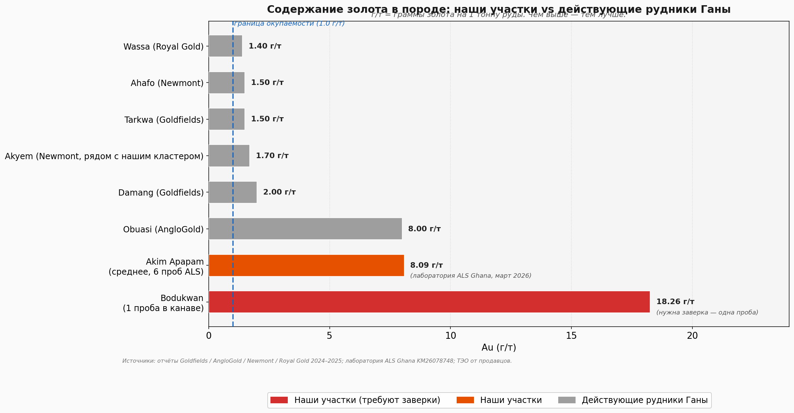
Akim Apapam (8.09 г/т) — на уровне рудника Obuasi (7–10 г/т), в 4–5 раз выше чем Tarkwa и Akyem. Это первоклассное содержание по мировым стандартам. Получено по 6 пробам из лаборатории ALS Ghana.
Bodukwan, проба из канавы 18.26 г/т — выше любого действующего рудника Ганы. Это одна проба — требует повторного подтверждения. Но геология района (твёрдые породы с кварцевыми жилами) делает этот результат реальным.
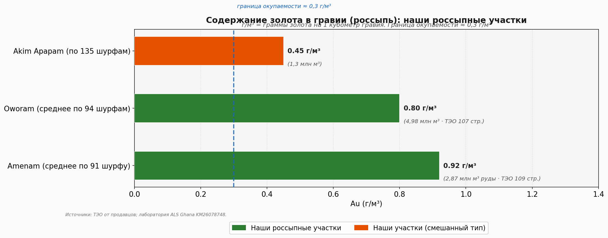
Россыпные запасы Amenam (0.92 г/м³) и Oworam (0.80 г/м³) — выше типичной границы окупаемости (0.3 г/м³) более чем вдвое. Запасы задокументированы 91 и 94 шурфами соответственно.
Большинство коммерческих россыпных операций в Западной Африке работают при 0.4–0.6 г/м³. Наши участки имеют двойной запас прочности.
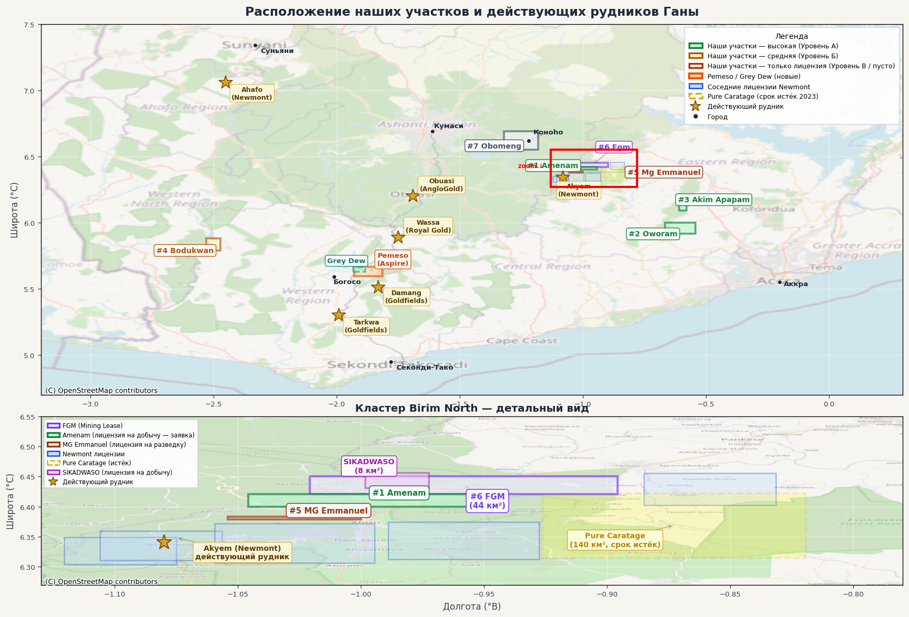
FGM + Amenam + MG Emmanuel + Akim Apapam + Oworam + Obomeng — 6 участков. Золотоносный пояс Birim. Zijin Mining (бывший Newmont, 5 лицензий ~190 км²) окружает кластер кольцом — новый китайский SOE-сосед с планом UG к 2028.
Bodukwan + Pemeso + Grey Dew — 3 участка. Один из исторически богатейших золотых поясов Ганы (Bogoso, Tarkwa, Damang — все в 15–30 км). Pure Caratage (жёлтый пунктир, 140 км²) — срок лицензии истёк в 2023, статус требует проверки.
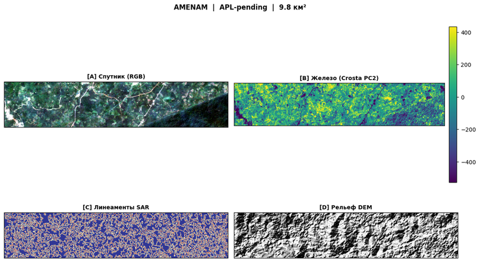
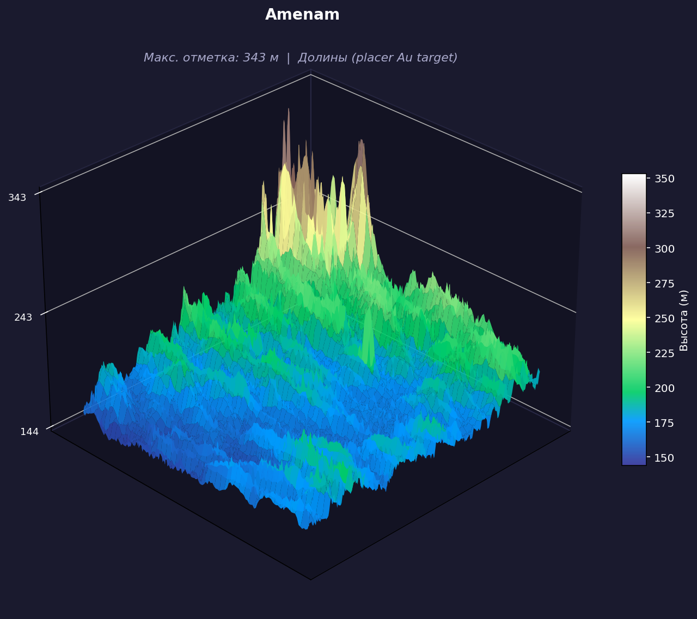
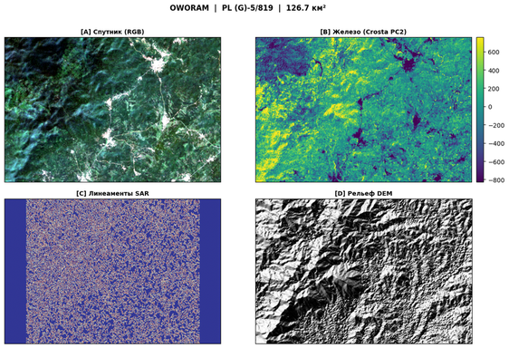
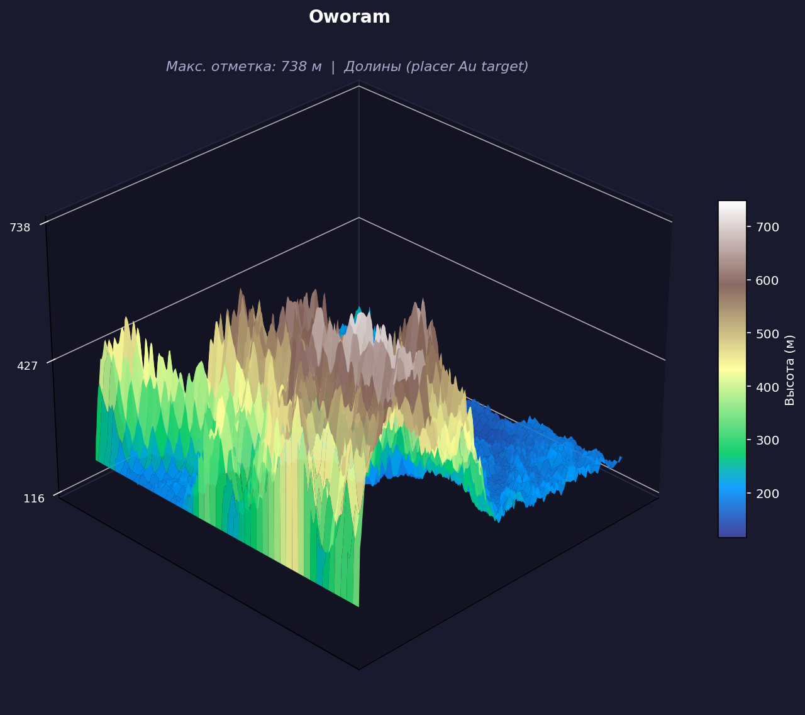
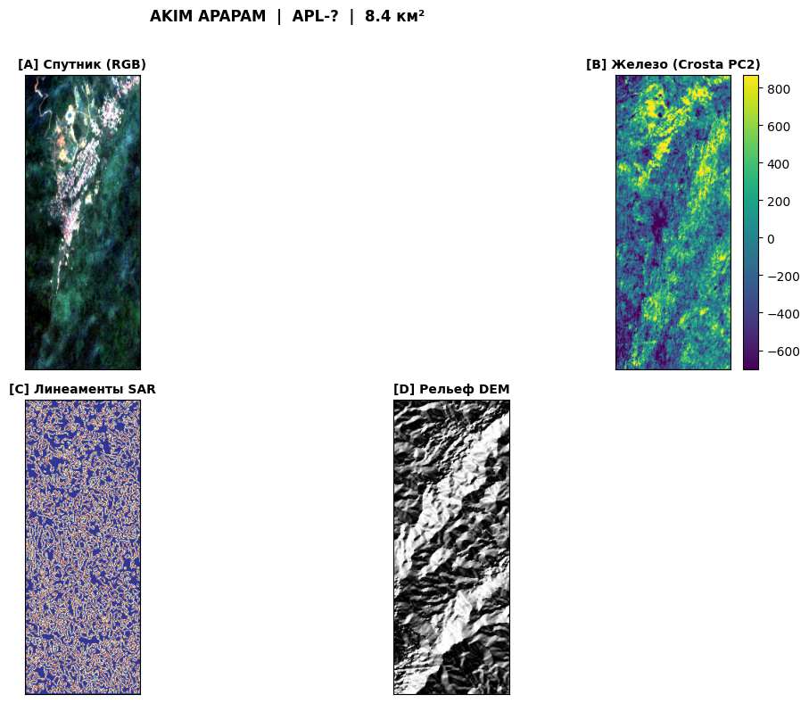
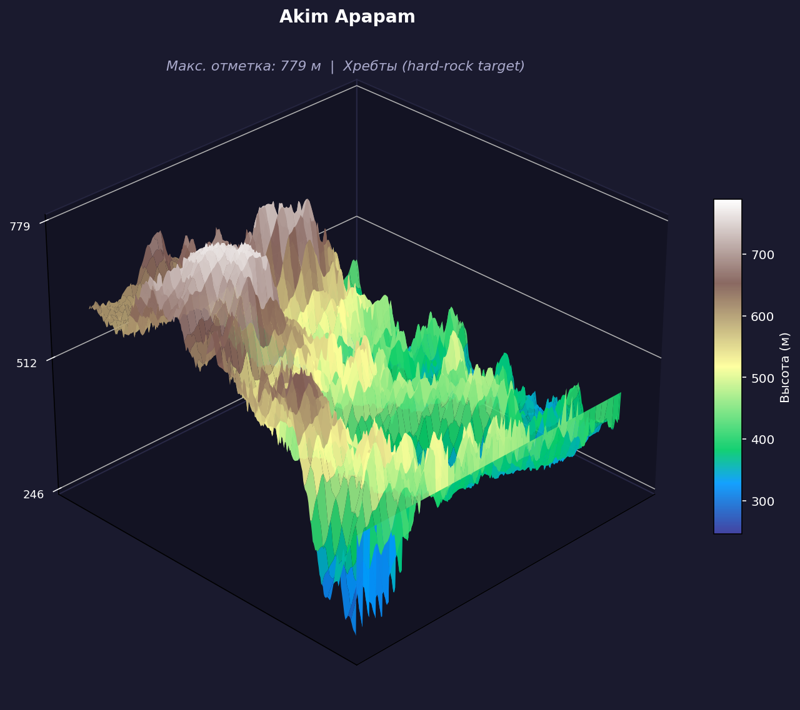
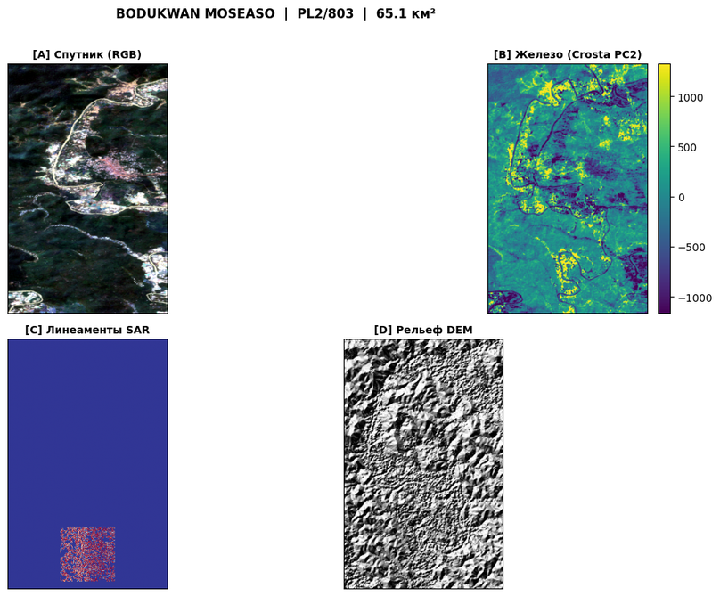
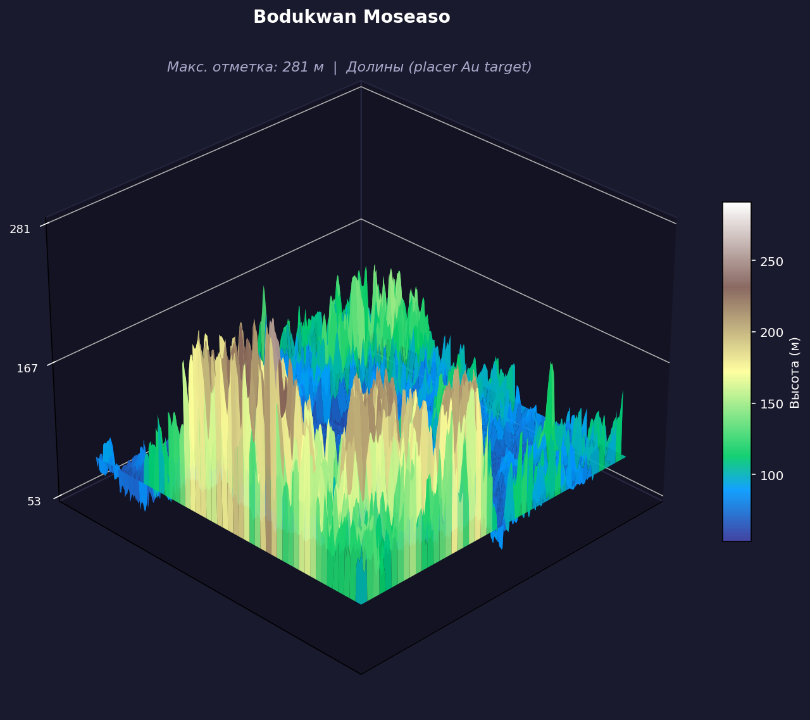
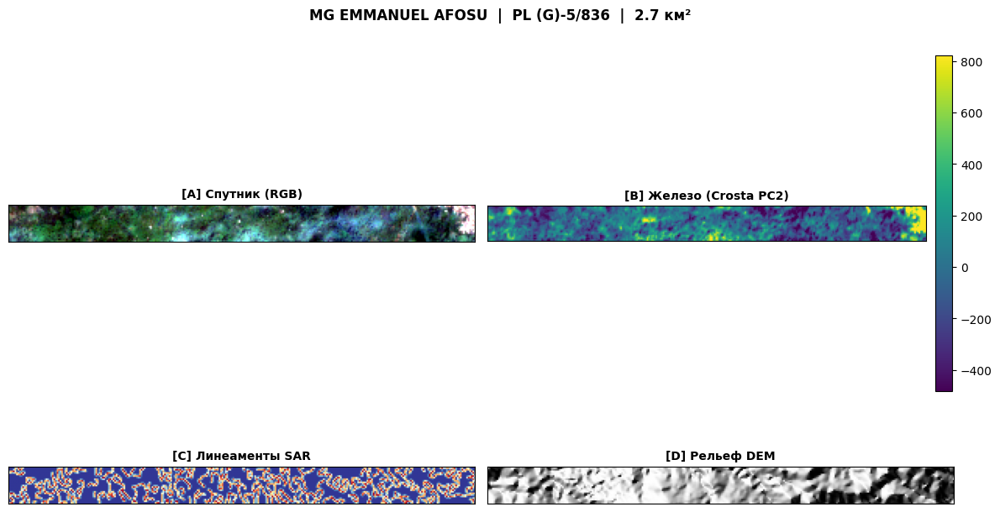
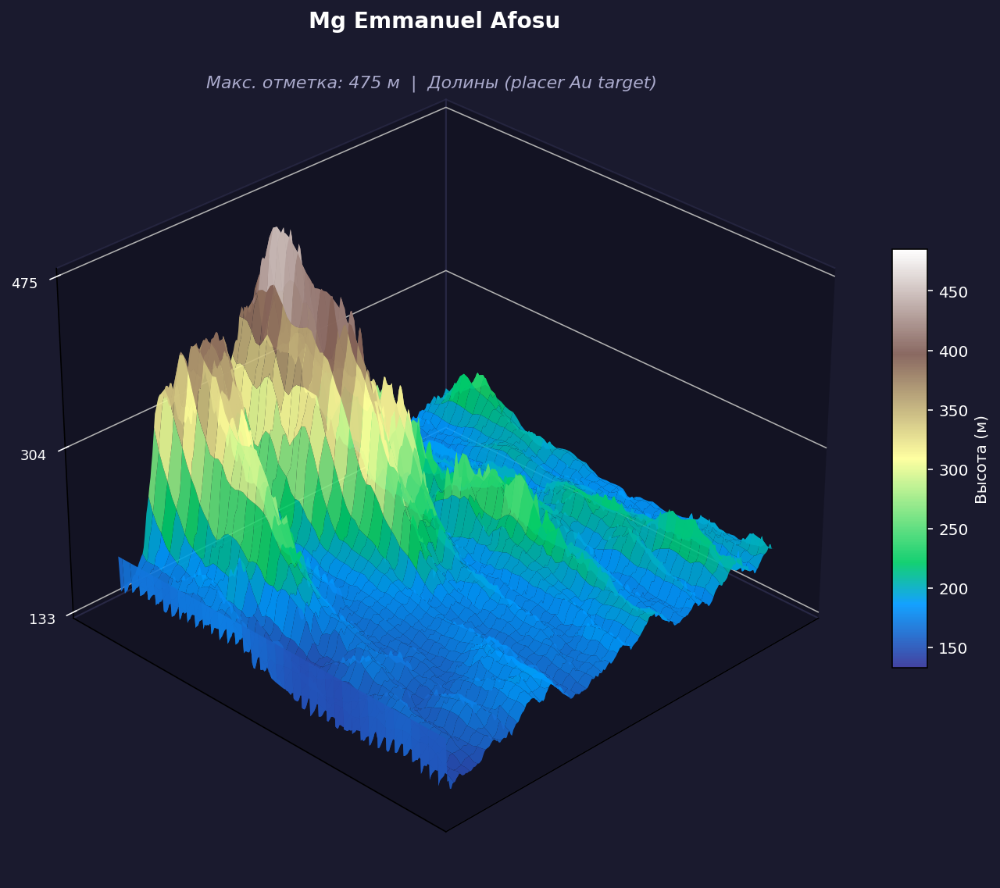
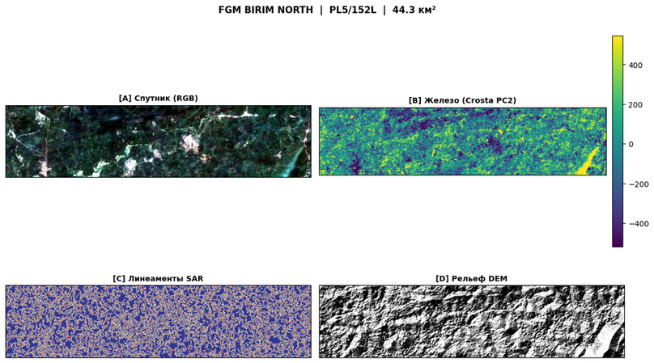
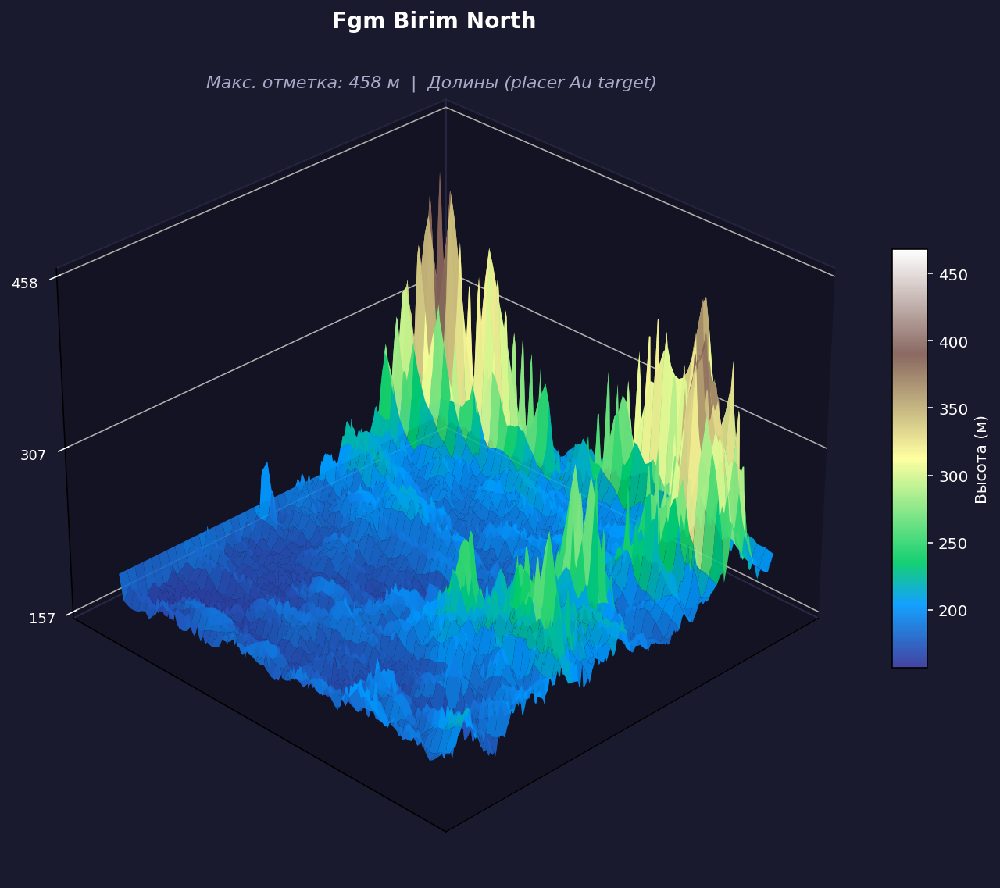
Уровень данных: только лицензия — в архиве только план землеотвода. Никаких геологических данных: ни лабораторных проб, ни шурфов, ни рабочей программы.
Официальный реестр: не найден в Ghana Minerals Commission (снимок 04.05.2026). Лицензия либо в стадии оформления, либо не была зарегистрирована.
Район: Prestea Huni Valley — хороший геологический пояс (Prestea–Bogoso), рядом с действующим рудником Blue Gold Bogoso Prestea (лицензия на добычу до 2040). Потенциально привлекательная локация.
Соседство: граничит с лицензией иностранной компании SDIM (до 2027) — возможное пересечение границ требует проверки по координатам.
Уровень данных: нулевой. В архиве — один скриншот карты из мессенджера. Ни точных координат, ни номера лицензии, ни названия оператора. Не найден в официальном реестре Ghana Minerals Commission.
Спутниковый анализ выполнен на приблизительных координатах центроида (~район Konongo). Все результаты условны. Оценка 17.4 — наименьшая в портфеле.
Потенциал россыпи по рельефу умеренный (высота над водотоком 5.4 м). Никаких лабораторных проб, никаких шурфов.
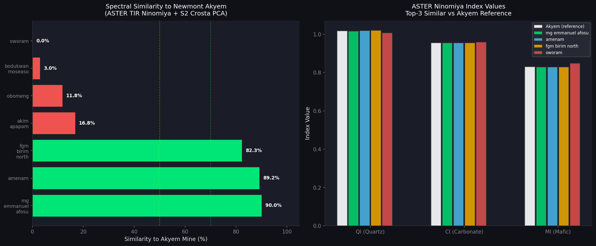
MG Emmanuel, Amenam, FGM Birim North — тот же силицированный Birimian shear zone что и Akyem (~4–12 км, NE-тренд)
Akim Apapam (16.8%) — отдельная жильная система. Bodukwan (3%) и Oworam (0%) — иные геологические обстановки (Sefwi belt, аллювий)
| # | Концессия | QI | CI | MI | PC2 железо | PC4 кремень | Сходство ASTER | Рейтинг |
|---|---|---|---|---|---|---|---|---|
| Эталон — Akyem Mine (Newmont до 16 апр 2025; Zijin Mining с апр 2025) (6.34°N, 1.08°W) | ||||||||
| — | Akyem (Zijin Mining с апр 2025) Действующий рудник · 83 т Au UG ресурс · план UG к 2028 |
1.0179 | 0.9554 | 0.8304 | 224.9 | 43.3 | 100% (эталон) | ЭТАЛОН |
| 1 | MG Emmanuel Afosu FGM кластер · 2.74 км² |
1.0163 | 0.9556 | 0.8288 | 204.6 | 26.8 | 90.0% | ВЫСОКОЕ |
| 2 | Amenam FGM кластер · 9.77 км² |
1.0191 | 0.9559 | 0.8297 | 173.6 | 25.9 | 89.2% | ВЫСОКОЕ |
| 3 | FGM Birim North FGM кластер · 44.32 км² |
1.0208 | 0.9560 | 0.8287 | 192.0 | 37.0 | 82.3% | ВЫСОКОЕ |
| 4 | Akim Apapam Около FGM · 8.4 км² |
1.0025 | 0.9546 | 0.8409 | 295.9 | 65.8 | 16.8% | НИЗКОЕ |
| 5 | Obomeng Ashanti · ~25 км² |
1.0049 | 0.9554 | 0.8490 | 187.3 | 38.9 | 11.8% | НИЗКОЕ |
| 6 | Bodukwan Moseaso Western North · 65 км² |
1.0070 | 0.9591 | 0.8464 | 368.2 | 99.8 | 3.0% | НИЗКОЕ |
| 7 | Oworam Eastern · 126.7 км² |
1.0073 | 0.9591 | 0.8484 | 264.9 | 30.3 | 0.0% | НИЗКОЕ |
| Концессия | Лицензия | Площадь км² | Disturbance % | Hansen пикс. | S1 тренд 2020→2025 | Статус |
|---|---|---|---|---|---|---|
| Kenbert Ntronang | PL5/3 | 25.5 | 4.63% | 5 093 | -7.00 → -6.96 (+0.04) | УМЕРЕННАЯ РАЗВЕДКА |
| Akyem West ML янв. 2025 — смотреть в первую очередь |
ML5/199 | 30.2 | 5.73% | 6 473 | -6.99 → -6.98 (+0.01) | УМЕРЕННАЯ РАЗВЕДКА |
| Akyem East Наиболее активный — 11.62% |
PL5/126 | 52.1 | 11.62% | 19 639 | -7.37 → -7.44 (-0.07) | АКТИВНАЯ РАЗРАБОТКА |
| Abirem | PL5/160 | 46.4 | 4.07% | 7 413 | -6.76 → -6.88 (-0.12) | УМЕРЕННАЯ РАЗВЕДКА |
| (Без названия) | PL5/134 | 35.5 | 4.58% | 4 508 | -6.81 → -6.93 (-0.12) | УМЕРЕННАЯ РАЗВЕДКА |
Временной ряд: 2020: -6.99 / 2021: -6.93 / 2022: -6.89 / 2023: -6.75 / 2024: -7.18 (пауза) / 2025: -6.85 (+0.33 год-к-году).
12 010 Hansen-верифицированных пикселей = 135 га вырубки после 2017 г. Серьёзная инвестиция — не паркование лицензии.
Вердикт: компания, скорее всего, продлит. Но если PL5/787 истечёт 17 мая — 25 км² Birimian ground прямо к северу от FGM кластера открывается без торгов.
Документальная база есть — нужна независимая верификация и программа бурения.
Ключевые данные есть, но объём выборки недостаточен для расчёта запасов.
Спутниковый сигнал есть — геологических данных практически нет.
Базовая информация отсутствует полностью.
| Сделка | Год | Сумма | Тип актива | $/унц | Релевантность для нас |
|---|---|---|---|---|---|
| Newmont → Zijin (Akyem) | 2025 | $1.0 млрд | Действующий карьер + UG ресурс (83 т) | $200–264 | Наш FGM кластер — в той же Birimian системе. Но без NI 43-101 мы не достигаем этого бенчмарка. |
| Cardinal → Shandong (Namdini) | 2021 | $220 млн | Greenfield / development-stage · 5.1 Moz P+P | $43 | Лучший greenfield-бенчмарк. Даже при наличии JORC ресурсов — $43/унц для development stage. |
| Kinross → Asante (Chirano) | 2022 | $225 млн (90%) | Действующий рудник (producing) | n/a | Cash + shares + deferred. Producing premium. Ghana local-content challenge для Asante после покупки. |
| Galiano (Asanko 45% incremental) | 2024 | $170 млн | Действующий рудник · 1.97 Moz P+P | EV/EBITDA 3.64× | Чистый EV/EBITDA comparable для exit-оценки если достигнем добычи. |
| E&P → Azumah (Black Volta + Sankofa) | 2025 | $100 млн | Development-stage · полностью ганайский | n/a | Шаблон "полностью ганайская крупная собственность". E&P + Tarkwa & Damang = $1.2 млрд инвестиций. |
Спутниковый стек: не вошёл в основной scores.json (данные обрабатывались отдельно). Статус лицензии через Minerals Commission — приоритет до любого анализа.
Ключевые факты: Aspire Gold Canada указывает район Wassa West. Исторические данные Newmont-era: 500+ проб почвы. Newmont оставил участок (причина неизвестна). Примечание: Newmont продал все Ghana активы Zijin в апреле 2025 — нынешних отношений Newmont с Pemeso нет.
Геофизика / DEM: не рассчитывались для Pemeso в текущей сессии. Требуется отдельная сцена.
Статус: лицензионные координаты не подтверждены в реестре. Спутниковый стек не выполнялся — нет достоверных координат центроида.
Известно из документов: разведочная лицензия, предположительно Eastern Region. Без верификации координат в Minerals Commission любые спутниковые данные будут привязаны к неправильной точке.
Первоочередная задача: юридическая проверка номера лицензии + координат до любого технического анализа.
Zijin Mining Group Co., Ltd. — китайская публичная компания (листинг: Hong Kong SEHK + Shanghai SSE). Один из крупнейших производителей Au+Cu+Li в мире с активами на 5 континентах. Штаб-квартира Fujian, КНР.
Стратегия: агрессивные M&A с длинным горизонтом (≥10 лет). Akyem — стратегическое приобретение для Западной Африки за $1 млрд. Zijin известен низкими IRR-требованиями по сравнению с западными мейджорами.
Newmont владел Akyem 2013–2025. Тренд divestiture с 2023: продал Penasquito, Cripple Creek, Eleonore, Musselwhite, Porcupine, CC&V — и финально Akyem. Newmont полностью вышел из Eastern Region Ганы.
Что у Zijin: Akyem East ML до 2037, Akyem West ML до 2030. Производство 2024: 6.4 т Au (≈205 800 унций). UG план к 2028: 83 т Au в потенциальных подземных ресурсах. Зарезервированные ресурсы: 34.6 т @ 1.35 г/т (P+P) + 54.4 т @ 3.36 г/т (M&I/Inferred).
Смысл: участок с сильным спутниковым сигналом, но без единого документа (FGM Birim North) получает composite_score=47.9 но integrated_score=26.4 — потому что confidence_score=0.55.
Участок с умеренным сигналом и полным ТЭО (Amenam) получает integrated_score=45.3 — наивысший в портфеле. Это правильная логика для инвестиционного DD.